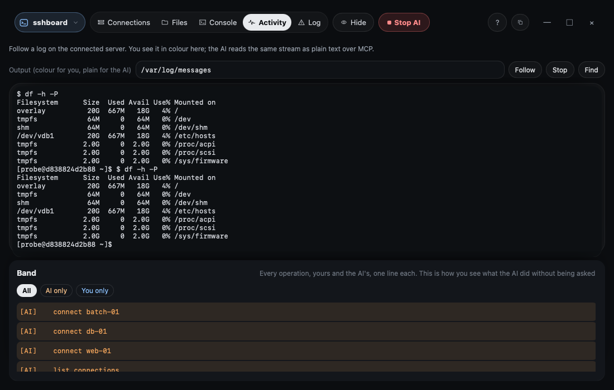
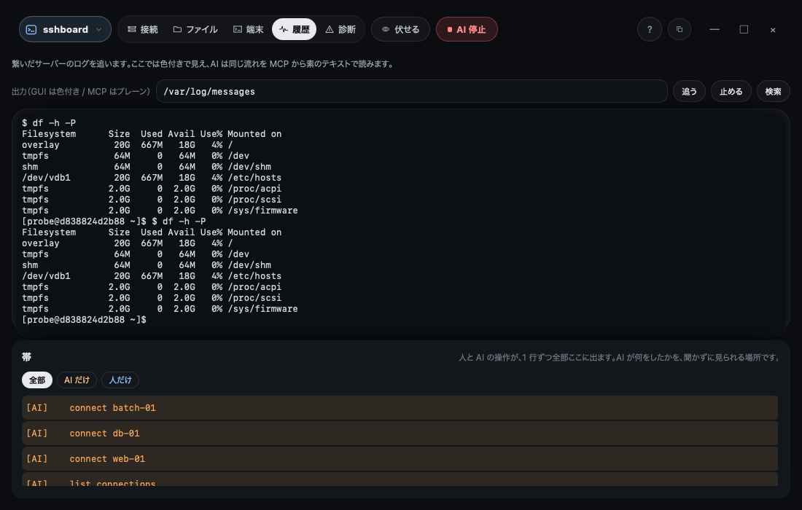

Mail stopped arriving and nobody knows where to look
- Uses
- read_file · service_status · read_log · disk_usage
- Finds
- The mail server is up, but the disk holding its queue is full
- How it ends
- You free the space; the agent watches the log until mail starts moving again
Steps
- Ask the agent. Connect to
mail-01(made up) and tell the agent mail stopped arriving. It has no command line to type into — only tools for looking. - It reads, on your screen. It reads the mail server config, checks the service is running and tails the mail log. Every one of those lines appears in the band beside your terminal before it runs.
- The cause shows up. The log says the queue cannot be written;
disk_usageshows the partition at 100%. - You make the change. Clearing space is a change to the server, so it is yours to make (or an operation you listed in advance, which asks you first). The agent then confirms the queue is draining.

Why this matters
Nothing the agent did was invisible, and nothing it did changed the server. Finding the cause and making the change stayed two different steps.
メールが届かなくなった。どこを見ればいいか分からない
- 使うもの
- read_file · service_status · read_log · disk_usage
- 見つかるもの
- メールのサーバーは動いているが、キューを置くディスクが満杯
- どう終わるか
- あなたが空きを作り、メールが流れ出すまで AI がログを見届ける
手順
- AI に聞く。
mail-01（架空）に繋ぎ、メールが届かないと AI に伝えます。AI に打てるコマンド行はありません —— あるのは見るための道具だけです。 - あなたの画面で読む。 AI はメールのサーバーの設定を読み、サービスが動いているかを見て、メールのログを追います。そのどれもが、走る前に端末の横の帯に出ます。
- 原因が見える。 ログに「キューに書けない」とあり、
disk_usageでその区画が 100% だと分かります。 - 変えるのはあなた。 空きを作るのはサーバーを変える操作なので、あなたが行います（または前もって挙げておいた操作として、あなたに尋ねてから）。そのあと、キューが減っていくのを AI が確かめます。

なぜこれがよいか
AI のしたことは 1 つも見えない所で起きておらず、どれもサーバーを変えていません。原因を探すことと、変えることが、別の手順のまま残りました。